Del sensor a la interpretación: cómo ve una máquina
Sistemas Inteligentes · Especialización en Inteligencia Artificial · UNAL Manizales · 30 min
Rediseño de la clase de Ernesto Cuartas Morales, Curso Dirigido de Implementación (2007). Debajo de cada bloque, con la flecha ↓, está el detalle completo del original.
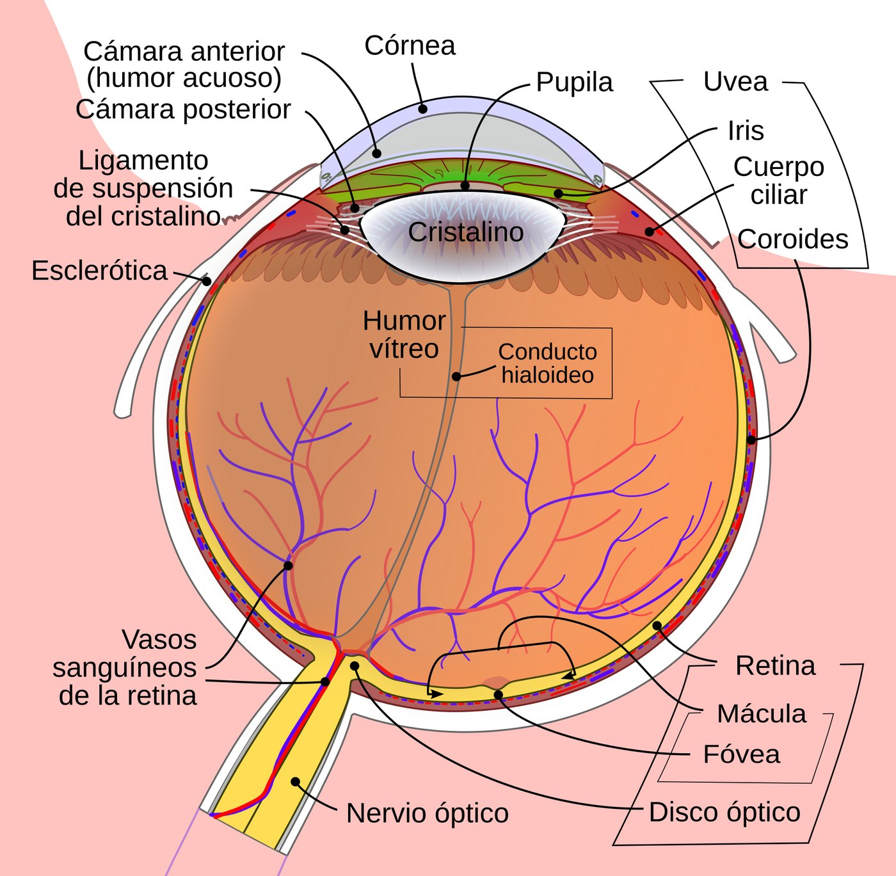
La retina convierte la luz en señales nerviosas.
Solo la fóvea, en el centro, ve con detalle.
El cerebro reconstruye la escena: lo que «vemos» es una interpretación.
Detalle: la retina y la fóvea
El esquema del ojo de la diapositiva 3 del original. En el recorrido de clase se usa un esquema equivalente, rotulado en español y con licencia libre.
La retina es una capa compleja compuesta sobre todo por células nerviosas. Las células receptoras sensibles a la luz se encuentran en su superficie exterior detrás de una capa de tejido pigmentado.
Debido a la estructura nerviosa de la retina, los ojos ven con una claridad mayor sólo en la región de la fóvea.
La reconstrucción generada por el cerebro de una imagen capturada por los lentes oculares es una proyección residual del entorno en la cual la información solo se encuentra detallada en el centro de visión.
Detalle: ¿es la misma figura?
Para decidir si dos de estas figuras son la misma, la mente las «gira»: es la rotación mental que estudiaron Shepard y Metzler (1971).
Una máquina necesita, igual, una representación que no cambie con la rotación: los momentos invariantes del caso 3 son un ejemplo.
Imagen: Clase2.ppt, E. Cuartas Morales (2007), diap. 6. En el recorrido de clase están redibujadas en SVG.
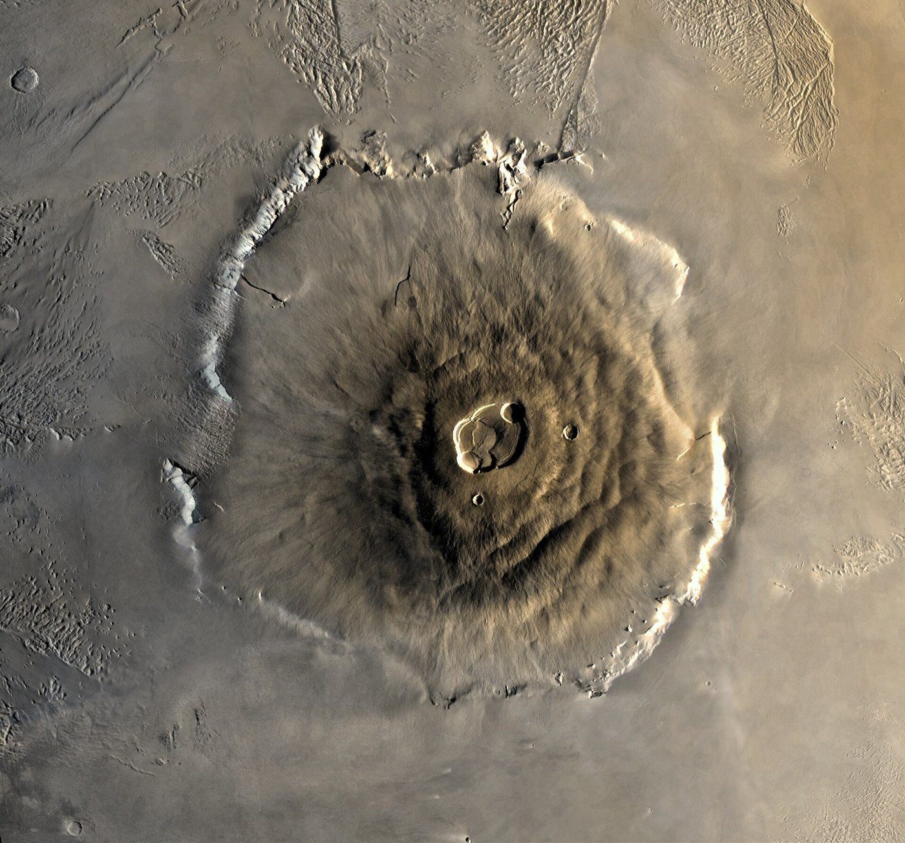
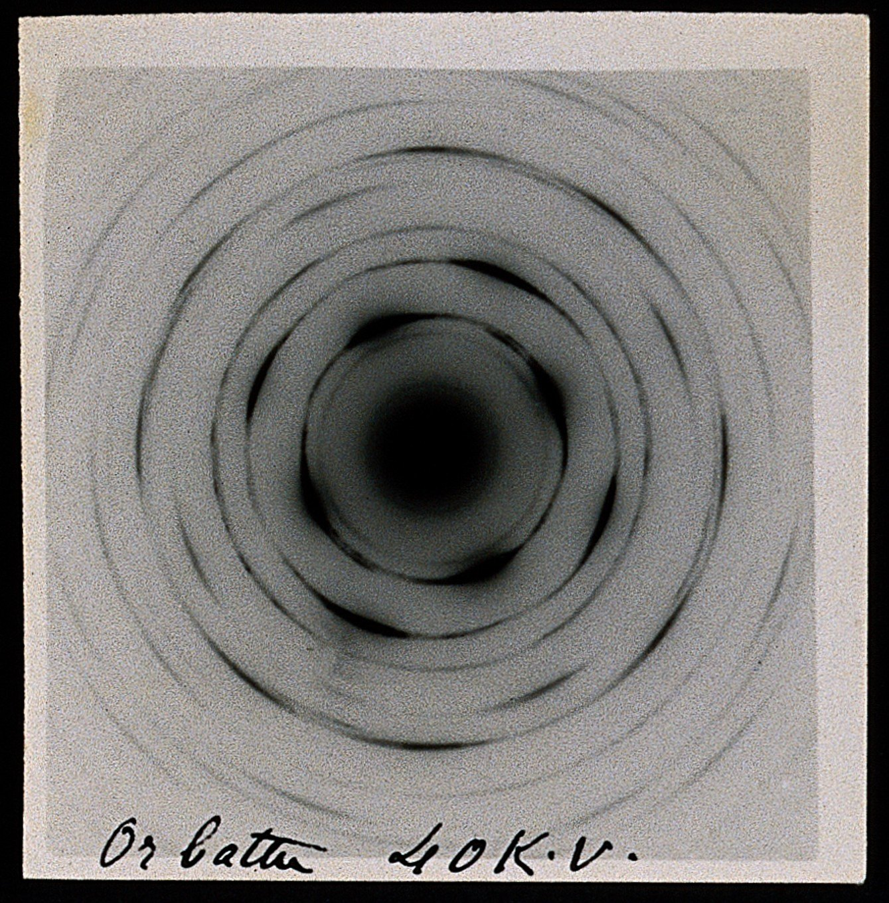
Una máquina puede «ver» en escalas, distancias y señales que el ojo no alcanza.
Imagen: Clase2.ppt, E. Cuartas Morales (2007), diap. 7. En el recorrido de clase se usan imágenes equivalentes con licencia libre.
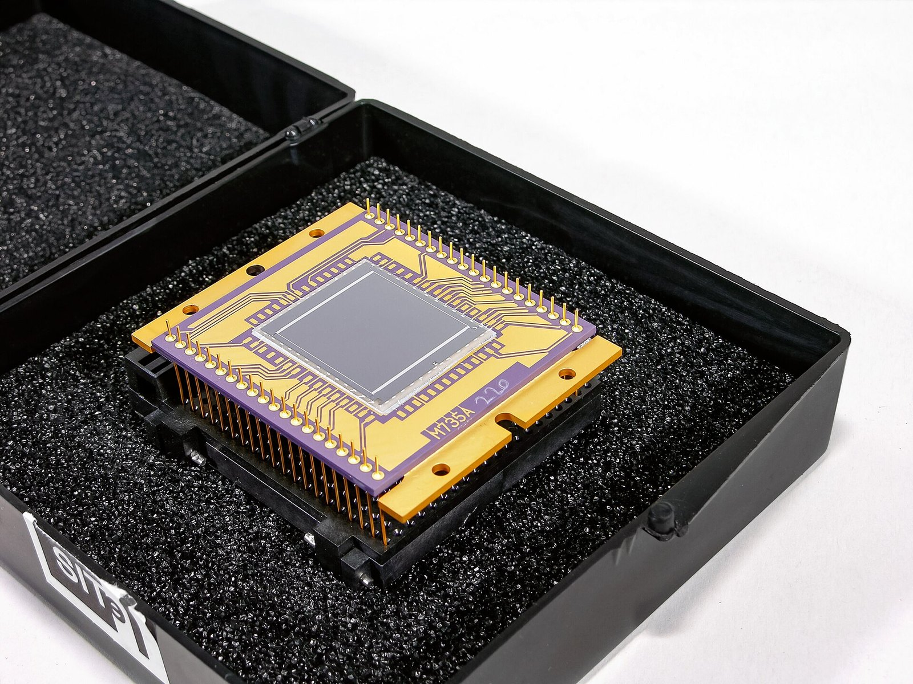
Un fotón libera electrones en el silicio: la carga de cada píxel es proporcional a la luz.
Las cargas se desplazan fila por fila hasta la salida, donde se convierten en números.
CCD: Boyle y Smith, Laboratorios Bell, 1969 (Nobel de Física 2009). Se apoya en el efecto fotoeléctrico que explicó Einstein en 1905.
Detalle: fotografía digital y el CCD
Cada columna de píxeles pasa sus cargas hacia abajo, como una banda transportadora, hasta un registro horizontal; este las lleva una por una a la etapa de salida, donde se amplifican y se convierten en números.
Flujo de información: la luz forma la imagen sobre el arreglo matricial del sensor; las cargas se leen fila por fila y se convierten en números.
El CCD (siglas de Charge Coupled Device, dispositivo de carga acoplada) es un dispositivo fotosensible que convierte la información lumínica en una respuesta eléctrica proporcional a la intensidad de la luz captada.
Willard Boyle y George Smith inventaron el CCD en 1969, en los Laboratorios Bell. Su principio de funcionamiento aprovecha el efecto fotoeléctrico, que Albert Einstein explicó en 1905 y por el que recibió el Premio Nobel de Física de 1921: la luz llega en cuantos de energía, los fotones. Cuando un fotón choca contra ciertos materiales (como el silicio de un chip CCD, que es un semiconductor), su energía puede liberar electrones; estos se almacenan en condensadores acoplados, y su carga es proporcional a la cantidad de luz que incide sobre el sensor.
Corrección al original: el efecto fotoeléctrico lo explicó Einstein en 1905 (el Nobel es de 1921), los fotones no tienen carga y el silicio es un semiconductor, no un metal.
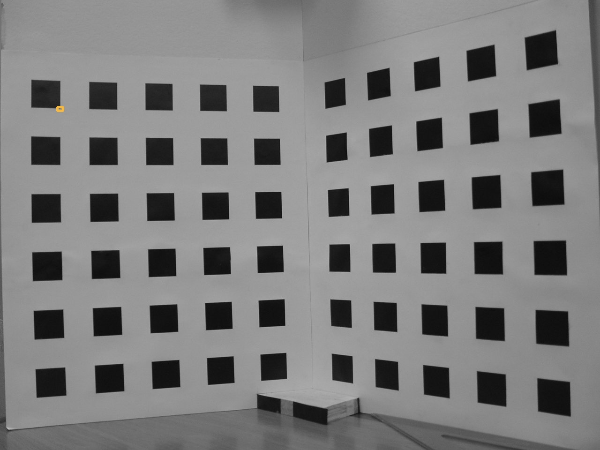
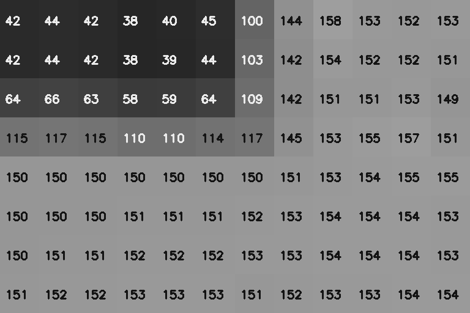
ejemplos/pipeline_clasico.py.Un sensor solo mide intensidad.
Para el color, cada píxel lleva un filtro rojo, verde o azul, o un prisma separa la luz hacia tres sensores.
Resultado: tres canales (R, G, B). Cada uno es una tabla de números.
Detalle: el espacio de color RGB
Imagen: Clase2.ppt, E. Cuartas Morales (2007), diap. 10.
Una cámara proyecta el mundo 3D en un plano 2D.
Cada punto X del mundo cae en un punto x de la imagen, sobre la recta que pasa por el centro de la cámara.
Calibrar es averiguar la matriz que hace esa proyección: dónde está la cámara y cómo es por dentro.
Detalle: ecuaciones del modelo
La información capturada por una cámara corresponde a un mapeo 2D de un Universo 3D
Este mapeo puede ser descrito por la siguiente ecuación:
Donde x es un punto en coordenadas homogéneas bidimensionales del mundo de la cámara y X es un punto en coordenadas homogéneas tridimensionales del mundo real.
La matriz P se conoce como matriz de calibración de cámara, esta contiene los parámetros intrínsecos de la cámara (distancia focal, punto principal, etc.) y los parámetros extrínsecos (posición, rotación y orientación)
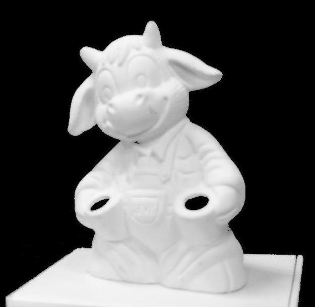
Por triángulos semejantes, un punto a altura Y y profundidad Z se proyecta a la altura fY/Z: los objetos lejanos se ven más pequeños.
Después de obtener la matriz P mediante las correspondencias mapeadas mediante el patrón de calibración se empleó el método de optimización por descenso de gradiente para minimizar el error de correspondencia espacial.
Para extraer los parámetros de la cámara, se debe descomponer la matriz P.
En donde C̃ es el centro de la cámara (posición), R la rotación de la cámara con respecto al espacio 3D y K la matriz de parámetros de la cámara.
αx, αy: factores de escala en x y en y; s: sesgo (skew); x0, y0: coordenadas del punto principal.
El centro de la cámara se obtiene de las columnas pi de P.
La matriz de calibración P mapea la información espacial R3 homogénea en el espacio R2 homogéneo definido por el plano de la imagen.
A partir del modelo pin-hole, y considerando una línea que contiene el centro de cámara C y cualquier otro punto A en el espacio, se pueden representar los puntos sobre esta línea paramétricamente como
Dado un plano π, y una estimación del vector A (se hace λ = 1 y se estima A mediante una correspondencia espacial), se puede hallar la intersección de la recta paramétrica con el plano, de esta forma, si el plano es la caracterización de una línea enviada por algún emisor de luz (proyector, una sombra) la intersección de dicho plano con la recta paramétrica de la cámara en un punto sobre el modelo a rastrear, nos va a retornar la información espacial de dicho punto sobre el modelo.
Intersección de la recta paramétrica con el plano π.
Detalle: cada periodo, como en el original
La visión artificial es el área más reciente de investigación sobre el mecanismo de la percepción visual.
Ellas son:
• La Neurofisiología. Analiza el funcionamiento de adquisición y los mecanismos neuronales de los sistemas biológicos.
• La Psicología Perceptiva. Trata de comprender los mecanismos subyacentes a la percepción visual, incluyendo los mecanismos inteligentes.
• La Visión por Computador. Concibe y analiza los aspectos de cálculo y algoritmos de los procesos de adquisición, tratamiento e interpretación de las imágenes numéricas.
• Origen del tratamiento de imágenes 1950.
• Aplicación : Rayos X, OCR,...
• Imágenes de mala calidad y muy voluminosas.
• Tres dominios de investigación:
• Restauración (corregir defectos ligados a la adquisición)
• Realce (obtención de una imagen "bella" para visualizarla).
• Compresión (reducir el tamaño de la imagen).
Un hito de la época: en 1957, Russell Kirsch escaneó en el computador SEAC del NBS (hoy NIST) la primera imagen digital, de 176 × 176 píxeles.
• Evolución hacia la extracción automática de información.
• Aparición de la noción de descripción estructural.
• Nuevos temas: segmentación, extracción de contornos,
morfología matemática, etc.
• Interpretación de imágenes:
• Un entusiasmo explosivo al momento de la aparición de los
sistemas expertos
• Decepción proporcional al entusiasmo (el saber es muy
complejo para ser modelizado !).
Precisión: la morfología matemática nació antes, en 1964, con Matheron y Serra en la École des Mines de París; se difundió en los años setenta.
• De la imagen 2D a los modelos
tridimensionales.
• Análisis de movimiento.
• Visión para la robótica (movimiento, 3D, detección de obstáculo, trayectoria).
• Visión 2D½, Shape from X.
Es el mapa del Laboratorio 4A. Diagrama clásico de Gonzalez y Woods; la 4.ª edición (2018) detalla más etapas.
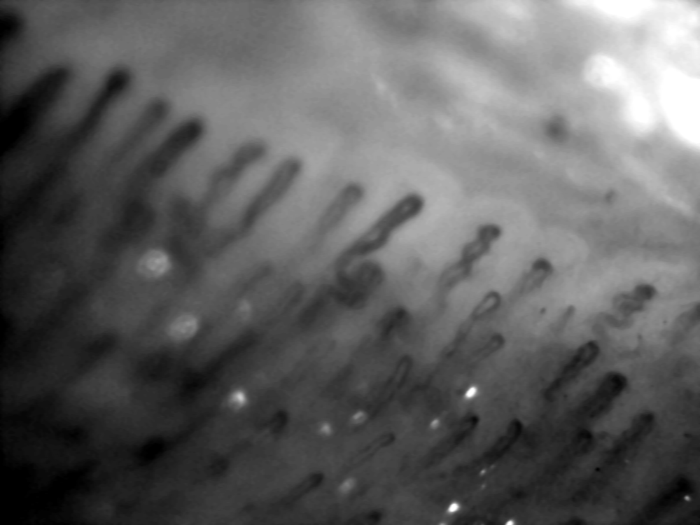
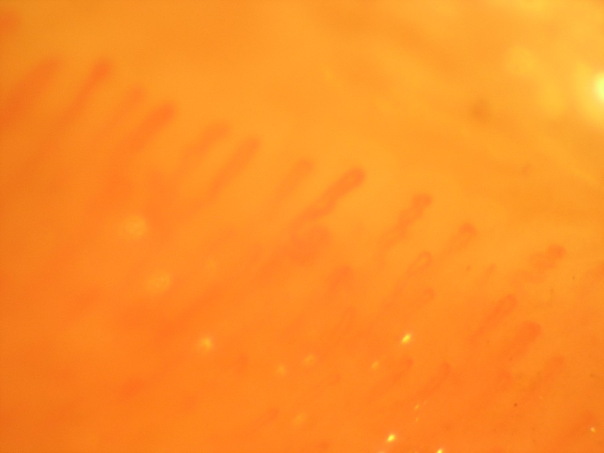
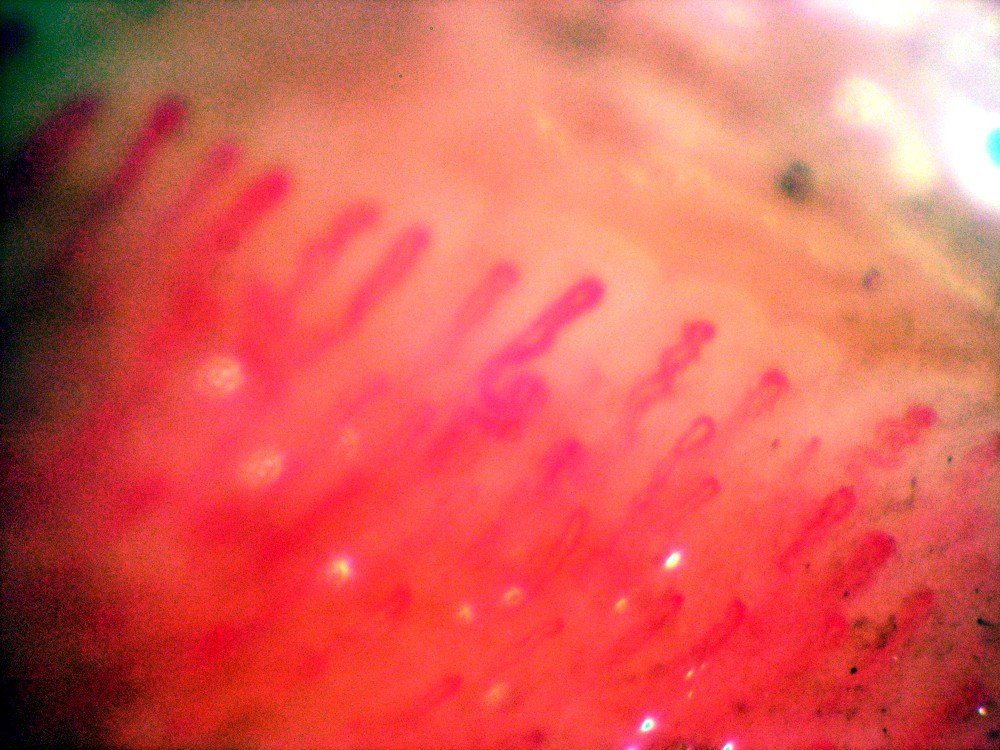
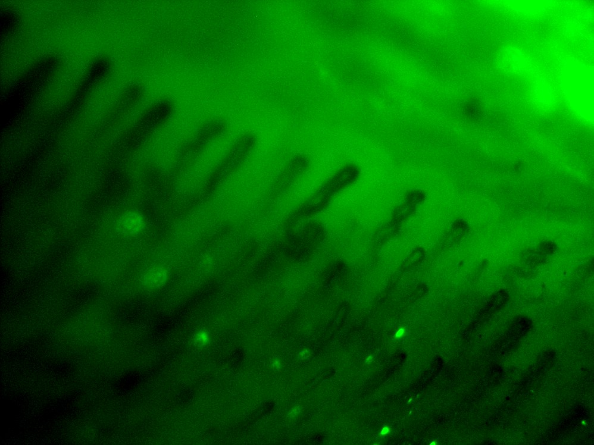
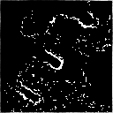
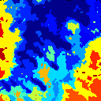
Cada etapa prepara la siguiente; ninguna sola basta.
Detalle: el trabajo completo de segmentación de capilares
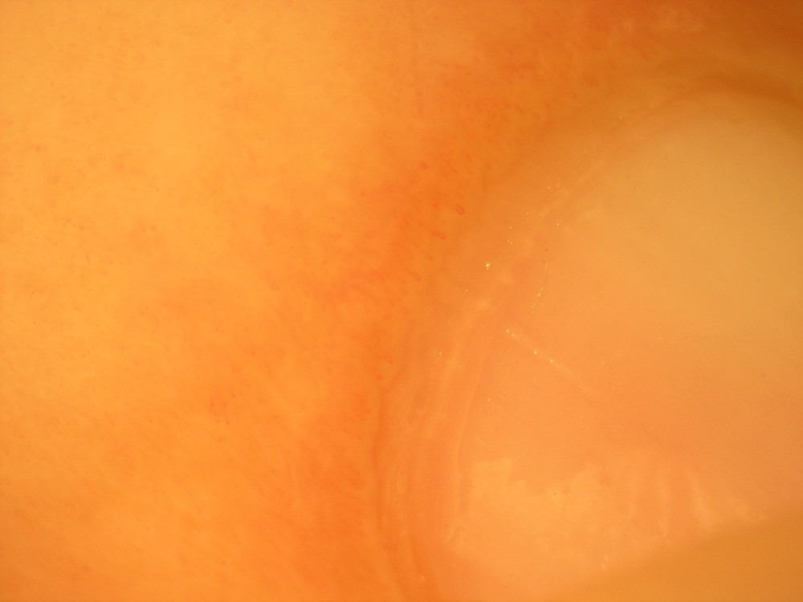
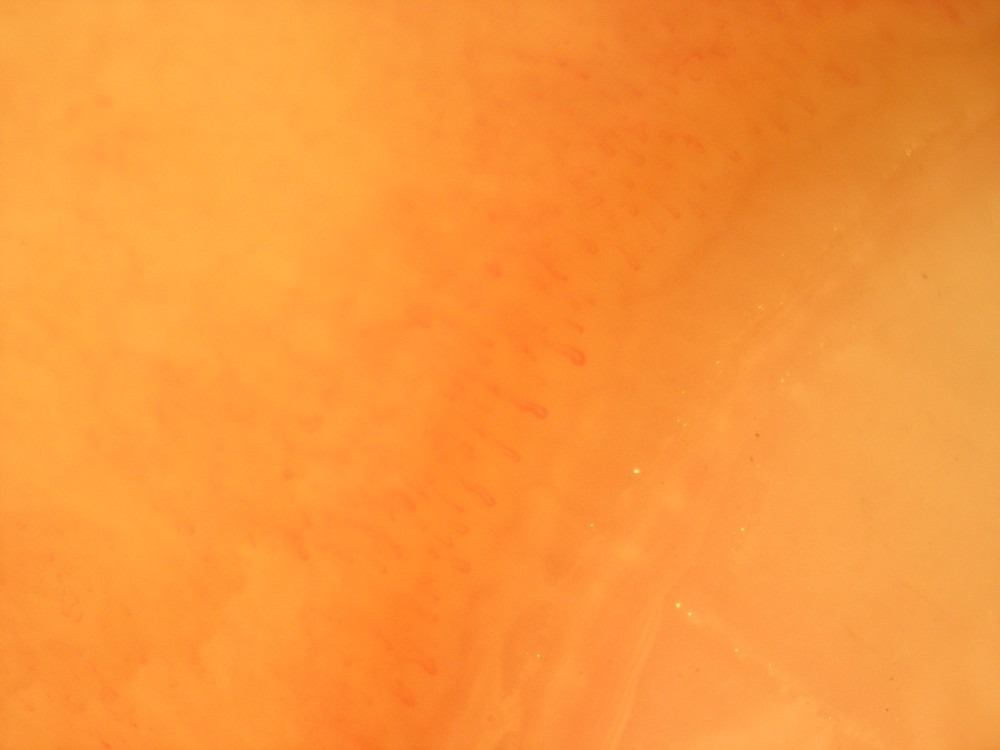
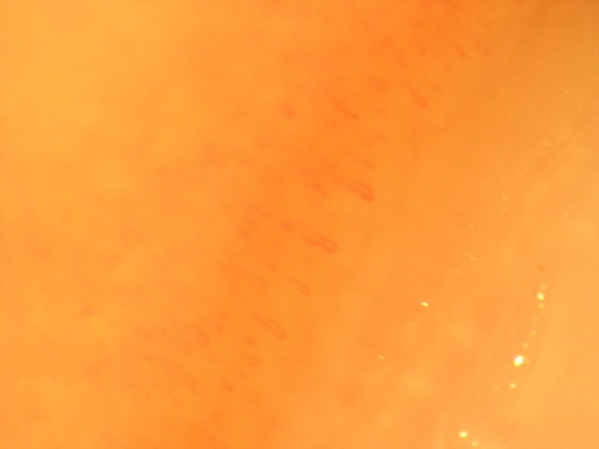
Imagen: Clase2.ppt, E. Cuartas Morales (2007), diap. 93, 94.
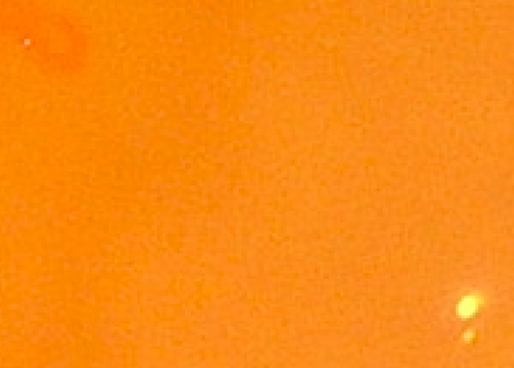
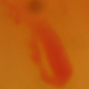
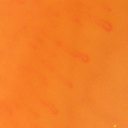
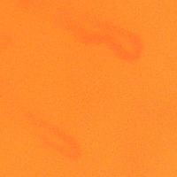
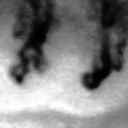
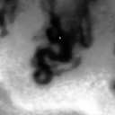
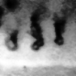
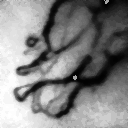
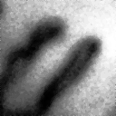
Imagen: Clase2.ppt, E. Cuartas Morales (2007), diap. 96.
Imagen: Clase2.ppt, E. Cuartas Morales (2007), diap. 97.
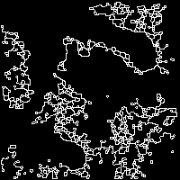
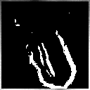
Imagen: Clase2.ppt, E. Cuartas Morales (2007), diap. 98.
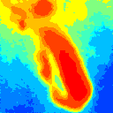
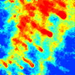
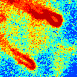
Imagen: Clase2.ppt, E. Cuartas Morales (2007), diap. 99.
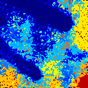
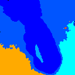
Imagen: Clase2.ppt, E. Cuartas Morales (2007), diap. 100.
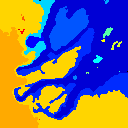
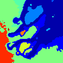
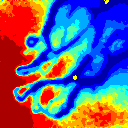
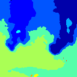
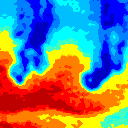
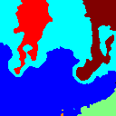
Imagen: Clase2.ppt, E. Cuartas Morales (2007), diap. 101, 102.
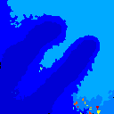
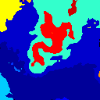
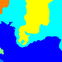
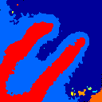
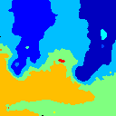
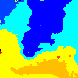
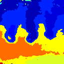
Imagen: Clase2.ppt, E. Cuartas Morales (2007), diap. 103.
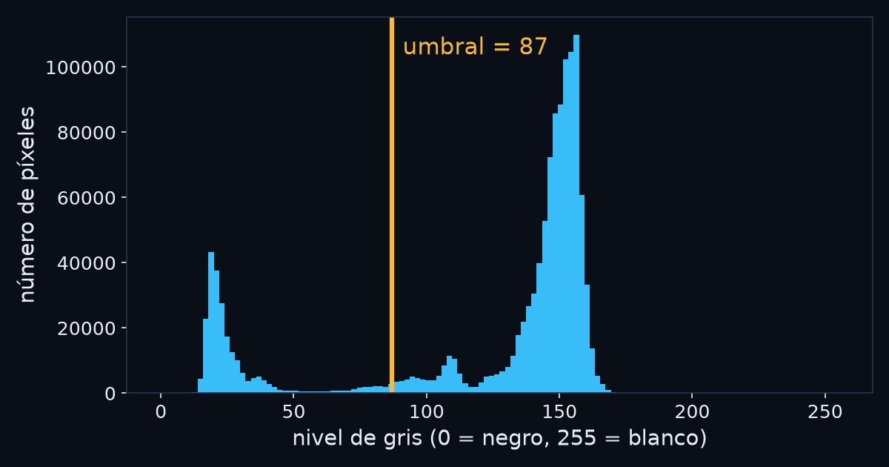
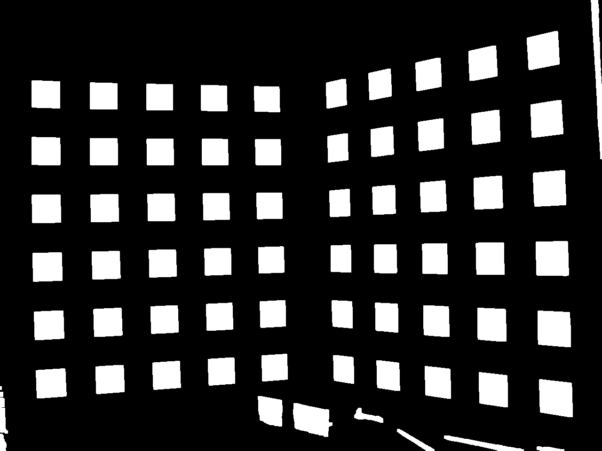
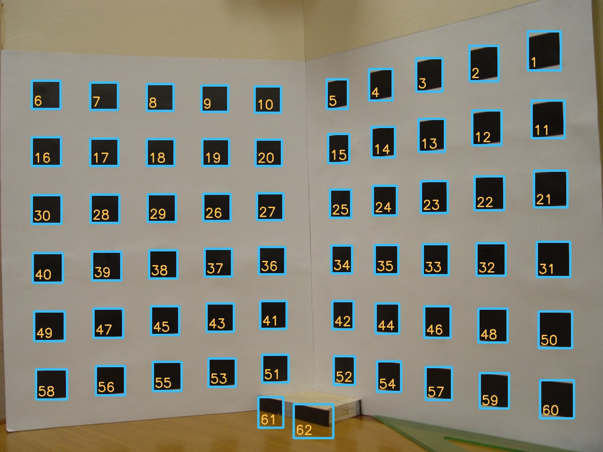
Las dos de más son las franjas negras de la base de madera: por eso se compara con un conteo a mano.
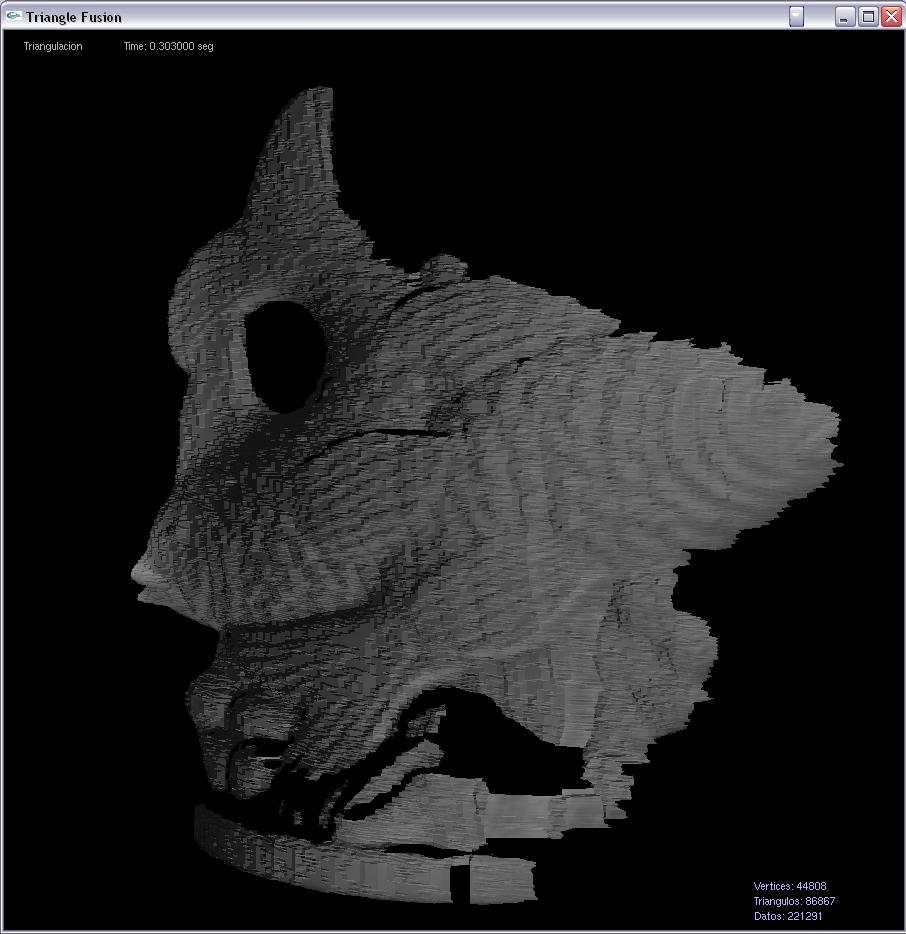
Adquisición 3D
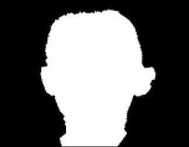
Segmentación por color
Características y clasificación
Registro 2D–3D
Crecimiento de regiones
Cada caso ilustra una etapa del pipeline. El detalle completo de cada uno está en su columna: ↓ desde su diapositiva.
Pregunta: ¿cómo obtener un modelo 3D con una cámara y un proyector de bajo costo?
Resultado: reconstrucciones de 25 714 a 44 808 puntos, comparadas con un escáner comercial.
La iluminación de la escena influye de forma determinante en la reconstrucción.
Detalle completo del caso
Publicación del caso: Trabajo del grupo PCI, UNAL Manizales. Antecedente: Gómez Mendoza (2004), tesis de maestría.
El método de triangulación, es por mucho el método más empleado para inferir la información espacial de un objeto del mundo real por medio de dispositivos ópticos.
Los sistemas de captura por triangulación se componen generalmente por un sistema de “proyección” de luz estructurada, que proyecta patrones como puntos, líneas, rejillas, etc., y por un sensor óptico, que típicamente es un CCD.
El sistema de adquisición cuenta con tres objetos que tienen coordenadas relativas con respecto a un origen global que se puede elegir arbitrariamente. Todos los elementos en la escena deben ser referidos a las coordenadas del mundo elegidas.
A partir de la información visual que se pueda obtener con la cámara, se deben calcular la posición y orientación de la cámara y el proyector con el fin de encontrar la información espacial implícita en cada silueta proyectada sobre el objeto.
El algoritmo empleado para encontrar la matriz de calibración de cámara es el DLT. Este método se basa en encontrar la matriz P que mejor se ajuste a un sistema sobredimensionado de correspondencias entre el plano de la cámara y el mundo 3D. Se requieren entonces correspondencias 2D-3D de la cámara y el mundo real.
Imagen: Clase2.ppt, E. Cuartas Morales (2007), diap. 27.
Imagen: Clase2.ppt, E. Cuartas Morales (2007), diap. 30.
Imagen: Clase2.ppt, E. Cuartas Morales (2007), diap. 32.
Imagen: Clase2.ppt, E. Cuartas Morales (2007), diap. 33, 34.
Imagen: Clase2.ppt, E. Cuartas Morales (2007), diap. 35.
Imagen: Clase2.ppt, E. Cuartas Morales (2007), diap. 36.
Imagen: Clase2.ppt, E. Cuartas Morales (2007), diap. 37.
Se planteó un esquema práctico de triangulación 3D de bajo costo, empleando luz estructurada. El esquema propuesto es flexible y puede ser adaptado fácilmente a esquemas con equipos diferentes a los empleados en este desarrollo, haciendo pequeños ajustes a la formulación planteada.
La iluminación de la escena influye de forma determinante en el resultado de la reconstrucción final. Esto debido al contraste en la imagen y la influencia de la iluminación en la crominancia de los colores elegidos para los patrones de luz en la adquisición.
La disposición de la cámara y el proyector, y en forma práctica, la separación entre estos tiene un efecto en la aproximación obtenida el cual debe ser considerado, ya que si la distancia es muy corta, la información espacial es poca, y si la distancia es muy grande, la oclusión de los patrones de luz sobre el objeto desde el punto de vista de la cámara hacen que el modelo resultante no sea práctico.
Pregunta: ¿se pueden medir los rasgos faciales de forma automática, a partir de fotografías?
Resultado: un modelo elíptico del color de la piel en YCbCr localiza rostro. ojos y boca; estudio en 23 colegios (5.866 estudiantes. muestra de 662)
La iluminación y el tono de la piel determinan el desempeño.
Detalle completo del caso
Publicación del caso: Mejía (2004), informe técnico del grupo PCI, UNAL Manizales.
Antropometría facial es la medida de la superficie de la cabeza y de la cara.
Expresa la calidad de las relaciones entre varias partes del cuerpo humano. La introducción de medidas individuales de la cabeza y de la cara desarrolladas principalmente para la medida del cráneo, data de la segunda mitad del siglo XIX. La antropometría experimentó un renacimiento hace 3 décadas cuando los médicos comenzaron a usar las medidas de la superficie de pacientes con deformidades craneofaciales congénitas o adquiridas y gradualmente ganó reconocimiento como un método objetivo para determinar cambios en la morfología de los tejidos blandos de la cara, permitiendo el establecimiento de los rasgos característicos del ser humano de acuerdo a su raza y sexo, y las diferentes anomalías faciales dentro de una población determinada.
Imagen: Clase2.ppt, E. Cuartas Morales (2007), diap. 41.
| Núcleo | Institución | Estudiantes | Muestra | Hombres | Mujeres |
|---|---|---|---|---|---|
| 1 | Colegio A | 142 | 16 | 8 | 8 |
| 1 | Colegio B | 247 | 28 | 14 | 14 |
| 1 | Colegio C | 138 | 16 | 8 | 8 |
| 2 | Colegio A | 290 | 32 | 16 | 16 |
| 2 | Colegio B | 115 | 14 | 7 | 7 |
| 3 | Colegio A | 357 | 40 | 20 | 20 |
| 3 | Colegio B | 186 | 20 | 10 | 10 |
| 4 | Colegio A | 182 | 20 | 10 | 10 |
| 4 | Colegio B | 322 | 36 | 18 | 18 |
| 5 | Colegio A | 459 | 52 | 26 | 26 |
| 5 | Colegio B | 129 | 14 | 7 | 7 |
| 5 | Colegio C | 138 | 16 | 8 | 8 |
| Núcleo | Institución | Estudiantes | Muestra | Hombres | Mujeres |
|---|---|---|---|---|---|
| 6 | Colegio A | 256 | 28 | 14 | 14 |
| 6 | Colegio B | 221 | 24 | 12 | 12 |
| 7 | Colegio A | 182 | 20 | 10 | 10 |
| 8 | Colegio A | 545 | 62 | 31 | 31 |
| 9 | Colegio A | 383 | 44 | 22 | 22 |
| 9 | Colegio B | 474 | 54 | 27 | 27 |
| 10 | Colegio A | 190 | 22 | 11 | 11 |
| 10 | Colegio B | 347 | 40 | 20 | 20 |
| 10 | Colegio C | 198 | 24 | 12 | 12 |
| 11 | Colegio A | 150 | 16 | 8 | 8 |
| 11 | Colegio B | 215 | 24 | 12 | 12 |
Base de datos seleccionada de niños estudiantes de colegio entre 5 y 10 años de la ciudad de Manizales: 5866 estudiantes en total en 23 colegios; muestra de 662, la mitad hombres y la mitad mujeres.
Imagen: Clase2.ppt, E. Cuartas Morales (2007), diap. 44.
Modelar el color de la piel requiere escoger un espacio de color adecuado e identificar una región (nube característica) asociada con su color en este. Se trabaja con el espacio de color YCbCr, ya que es un espacio de color perceptualmente uniforme y es ampliamente usado en compresión de video.
El espacio de color YCbCr es el equivalente digital del espacio de color YUV , donde Cb es la componente de crominancia que corresponde con la componente U y la componente Cr es análoga a V. El formato YCbCr, concentra la mayor parte de la información de la imagen en la luminancia y menos en la crominancia.
El resultado es que los elementos de YCbCr, están menos correlacionados y pueden ser codificados por separado y la nube característica del color de la piel es lo suficientemente compacta.
La segmentación se realiza mediante un modelado elíptico de la información del color de la piel en el espacio 3D YCbCr.
La boca presenta una baja respuesta en la característica Cr/Cb, y de forma contraria en Cr2. En base a estos criterios, el mapa de la boca es construido mediante la expresión descrita en la ecuación
⊕ y ⊖ son la dilatación y la erosión en escala de grises con un elemento estructurante gσ.
Imagen: Clase2.ppt, E. Cuartas Morales (2007), diap. 50, 51.
Imagen: Clase2.ppt, E. Cuartas Morales (2007), diap. 53, 54.
Imagen: Clase2.ppt, E. Cuartas Morales (2007), diap. 55, 56.
El establecimiento del estudio antropométrico facial de una determinada población requiere de una muestra representativa que permita generalizar los resultados obtenidos. Se tomó como población total, la de los niños inscritos en las diferentes instituciones educativas de la ciudad de Manizales. No se trabaja con la información determinada por el CENSO del año de 1993, ya que este es una proyección que no indica la situación real de la población para el año 2004. Con base en el conjunto poblacional seleccionado, se realizó un muestreo bietápico, ya que, la información requerida por el DANE a través de la Secretaría de Educación de Manizales, no es discriminante en cuanto la edad y el género, es decir, no se tiene el dato preciso de cuántas niñas de 5 años hay en una institución determinada por ejemplo, sino que, se tiene el dato general de niños y niñas. Por esta razón se seleccionó la muestra de niños y niñas por cada grupo de edad como un solo valor y se distribuyó, un 50% para el sexo masculino, y un 50% para el sexo femenino.
Para la adquisición de las diferentes imágenes faciales, se estableció un protocolo de control de las condiciones de toma de las muestras, como son la distribución geométrica de los elementos y el manejo de luces artificiales en un ambiente oscuro. Sin embargo, dichas condiciones tienen un pequeño margen de variabilidad, originado por las condiciones de trabajo de los elementos de adquisición (fotografía), la limitación del espacio físico en cada una de las instituciones visitadas y el trabajo con niños de edades inferiores. En cuanto al trabajo con los niños de las diferentes edades, se encontró dificultades, para controlar su posición estática, frontal y recta frente a la cámara, razón por lo cual se tienen imágenes rotadas, trasladadas, con los ojos fuera del rango frontal, y con la boca abierta.
En el procesamiento digital de las imágenes adquiridas, las condiciones de iluminación de la escena y el tono de la piel son los factores más importantes que determinan el desempeño de los algoritmos de detección y extracción de características faciales. Comparando los resultados de las diferentes pruebas realizadas, la imagen sin compensación de iluminación y sin transformación no lineal del espacio de color YCbCr, presenta el mayor desempeño en cuanto a imágenes procesadas satisfactoriamente y tiempo de cómputo, ya que las condiciones de iluminación del proceso de adquisición, son lo suficientemente buenas para dar un equilibrio entre el color del tono de la piel del sujeto de análisis y el brillo de la escena. Las pruebas con compensación de iluminación y/o transformación no lineal, introducen brillos indeseados en la imagen, que conducen a obtener falsos negativos en la detección, y consecuentemente fallos en la localización de los diferentes puntos faciales.
| /a/ | /e/ | /i/ | /o/ | /u/ | |
|---|---|---|---|---|---|
| /a/ | 79 % | 12 % | 1 % | 8 % | 0 % |
| /e/ | 10 % | 62 % | 24 % | 1 % | 3 % |
| /i/ | 3 % | 35 % | 55 % | 0 % | 7 % |
| /o/ | 2 % | 3 % | 6 % | 51 % | 38 % |
| /u/ | 0 % | 1 % | 5 % | 13 % | 81 % |
Pregunta: ¿se puede reconocer la vocal que se pronuncia a partir de la forma de los labios?
Resultado: 19 características (densidad, momentos, momentos invariantes, color) y cuatro clasificadores; con el bayesiano, de 51 % a 81 % de aciertos según la vocal.
Un clasificador sencillo, el bayesiano, basta para separar las cinco vocales.
Detalle completo del caso
Publicación del caso: Salazar y Prieto (2006), DYNA 73(150), 175–188. Artículo.
El modo de articulación está determinado por la disposición de los órganos móviles en la cavidad bucal y cómo impiden o dejan libre el paso del aire. Esta acción consiste en la interrupción instantánea y completa del paso del aire para los fonemas oclusivos (/p/,/t/,/k/,/b/,/d/,/g/); en dejar abierto el paso nasal pero interrumpido el oral para los fonemas nasales (/m/,/n/,/ñ/); en producir un contacto con la lengua pero dejar libre el paso del aire a uno y otro lado para los fonemas laterales (/l/,/ll/); en producir una leve interrupción primero y dejar el paso libre después para los fonemas africados (/c/); en permitir el paso del aire por un paso estrecho por el que el aire pasa rozando para los fonemas fricativos (/b/,/d/,/g/,/f/,/s/), y en permitir el paso libre del aire por el centro de la lengua sin fricción alguna para los fonemas vocales (/a/,/e/,/i/,/o/,/u/)
Imagen: Clase2.ppt, E. Cuartas Morales (2007), diap. 64, 65.
Imagen: Clase2.ppt, E. Cuartas Morales (2007), diap. 66.
Densidad: p es el perímetro de la región y A el número de píxeles comprendidos en su contorno.
Centro de masa.
Momentos estadísticos.
Momentos centrales.
Corregido respecto al original: se intercambiaban μ₂₀ y μ₀₂, μ₁₁ estaba incompleto, μ₁₂ tenía un término errado, y φ₃ y φ₇ tenían un signo y un subíndice equivocados. Se agrega la normalización ηpq, que el original no define. Fórmulas de Hu (1962).
| # | Característica | # | Característica |
|---|---|---|---|
| 1 | d | 11 | φ₁ |
| 2 | m₀₁ | 12 | φ₂ |
| 3 | m₁₀ | 13 | φ₃ |
| 4 | m₁₁ | 14 | φ₄ |
| 5 | m₂₀ | 15 | φ₅ |
| 6 | m₀₂ | 16 | φ₆ |
| 7 | m₃₀ | 17 | φ₇ |
| 8 | m₀₃ | 18 | μ_f |
| 9 | m₁₂ | 19 | σ_f |
| 10 | m₂₁ |
| Efectividad (PVP) | proporción de verdaderos positivos | |
| Error positivo (PFN) | proporción de falsos negativos | |
| Especificidad (PVN) | proporción de verdaderos negativos | |
| Error negativo (PFP) | proporción de falsos positivos | |
| Precisión (VPP) | valor predictivo positivo |
Imagen: Clase2.ppt, E. Cuartas Morales (2007), diap. 74.
| /a/ | /e/ | /i/ | /o/ | /u/ | |
|---|---|---|---|---|---|
| /a/ | 79 % | 12 % | 1 % | 8 % | 0 % |
| /e/ | 10 % | 62 % | 24 % | 1 % | 3 % |
| /i/ | 3 % | 35 % | 55 % | 0 % | 7 % |
| /o/ | 2 % | 3 % | 6 % | 51 % | 38 % |
| /u/ | 0 % | 1 % | 5 % | 13 % | 81 % |
| PVP (%) | PFN (%) | PVN (%) | PFP (%) | VPP (%) | |
|---|---|---|---|---|---|
| /a/ | 79,00 | 21,00 | 86,52 | 13,48 | 84,04 |
| /e/ | 62,00 | 38,00 | 63,11 | 36,89 | 54,87 |
| /i/ | 55,00 | 45,00 | 71,65 | 28,35 | 60,44 |
| /o/ | 51,00 | 49,00 | 81,12 | 18,88 | 69,86 |
| /u/ | 81,00 | 19,00 | 64,71 | 35,29 | 62,79 |
Izquierda: matriz de confusión (fila: vocal real; columna: vocal asignada). Derecha: métricas por vocal.
| /a/ | /e/ | /i/ | /o/ | /u/ | |
|---|---|---|---|---|---|
| /a/ | 86,60 | 0,00 | 8,25 | 2,06 | 3,09 |
| /e/ | 31,25 | 0,00 | 67,19 | 0,00 | 1,56 |
| /i/ | 6,25 | 0,00 | 91,67 | 0,00 | 2,08 |
| /o/ | 9,60 | 0,00 | 6,40 | 40,80 | 43,20 |
| /u/ | 0,52 | 0,00 | 8,38 | 3,66 | 87,44 |
En el original, la tabla de métricas de esta diapositiva es idéntica a la de redes neuronales y no corresponde a esta matriz de confusión: se omite hasta verificarla.
| /a/ | /e/ | /i/ | /o/ | /u/ | |
|---|---|---|---|---|---|
| /a/ | 88,8 % | 6,4 % | 0,8 % | 4 % | 0 % |
| /e/ | 16,8 % | 50,4 % | 31,2 % | 1,6 % | 0 % |
| /i/ | 2,4 % | 34,4 % | 60,8 % | 0,8 % | 1,6 % |
| /o/ | 5,6 % | 3,2 % | 3,2 % | 68 % | 20 % |
| /u/ | 0 % | 0 % | 7,2 % | 30,4 % | 62,4 % |
| PVP (%) | PFN (%) | PVN (%) | PFP (%) | VPP (%) | |
|---|---|---|---|---|---|
| /a/ | 88,80 | 11,20 | 79,09 | 20,91 | 78,17 |
| /e/ | 50,40 | 49,60 | 66,92 | 33,08 | 53,39 |
| /i/ | 60,80 | 39,20 | 67,83 | 32,17 | 58,91 |
| /o/ | 68,00 | 32,00 | 71,16 | 28,84 | 64,89 |
| /u/ | 62,40 | 37,60 | 81,41 | 18,59 | 74,29 |
Las técnicas empleadas, basadas en la información de color y sus transformaciones en los diferentes espacios de color, la técnica de proyecciones, los detectores de bordes y el análisis de regiones, son invariantes a la rotación y traslación de la boca. De igual manera son independientes de si la boca se encuentra abierta o cerrada permitiendo trabajar con las posturas labiales de los 5 fonemas vocales. Para el caso de la detección del rostro en la escena, se obtiene que el modelo elíptico de la piel establecido por Hsu, Abdel-Mottaleb y Jain (2002) es apropiado para el color del tono de la piel presente en la población de la zona centro de Colombia. En cuanto a la extracción de características visuales de los labios, se tiene que la localización correcta de los ápices depende de la eficiencia en la ubicación de las coordenadas (x, y) de los vértices.
La técnica de detección de bordes a través del operador SUSAN permite obtener resultados confiables para el análisis del contorno de los labios, desarrollando el método de reducción del espacio de búsqueda basado en la segmentación al eliminar la información espuria y resaltar de manera óptima los bordes exteriores de la boca. Así mismo, emplea un tiempo de cómputo bastante bajo lo cual permite la integración de los algoritmos desarrollados en este trabajo al sistema automático propuesto para el proyecto Análisis acústico de voz y de posturas labiales en pacientes de 5 a 15 años con labio y/o paladar hendido corregido en la zona centro del país.
De manera general, el error global de los clasificadores es muy similar para la información en espacios de trabajo originales de orden superior y para los espacios de orden reducido, teniendo entonces un ahorro en costo computacional sin sacrificar la efectividad en la clasificación de las diferentes posturas labiales. Así mismo, dichos errores permiten concluir que se puede trabajar con un clasificador más sencillo como el Bayesiano para separar los 5 fonemas vocales.
Pregunta: ¿cómo darle a un modelo 3D la apariencia real del objeto, a partir de fotografías?
Resultado: con la textura, un modelo de 3553 polígonos se ve con el detalle de uno de 71 084.
Hay que corregir la iluminación entre vistas: el brillo cambia de una foto a otra.
Detalle completo del caso
Publicación del caso: Hernández Londoño (2006), tesis de maestría, UNAL Manizales.
Imagen: Clase2.ppt, E. Cuartas Morales (2007), diap. 82.
Imagen: Clase2.ppt, E. Cuartas Morales (2007), diap. 83.
Imagen: Clase2.ppt, E. Cuartas Morales (2007), diap. 86.
Imagen: Clase2.ppt, E. Cuartas Morales (2007), diap. 87.
Este trabajo establece una metodología general para el mapeo de texturas de modelos de objetos del mundo real utilizando múltiples vistas. Las imágenes de textura pueden ser tomadas utilizando un patrón de calibración y de esta forma obtener resultados de alta precisión y calidad en la asignación de la textura sobre el modelo 3D. Igualmente, pueden ser tomadas desde posiciones arbitrarias utilizando el método semi-automático de registro 3D - 2D a un punto de vista o el método manual de asignación de puntos de control, para el mapeo de texturas obteniendo resultados muy aceptables.
Las diferencias en el brillo debido a la iluminación y a las propiedades de reflectancia de los objetos, presentes en la adquisición de las múltiples vistas del modelo, fueron reducidas utilizando un algoritmo de corrección de iluminación por constancia de color por correlación. De igual forma, la utilización de un ponderado con el uso de pesos de los posibles téxeles, producen una reconstrucción visualmente suave, entre la asignación de las texturas en regiones adyacentes de la superficie del modelo.
Los mejores resultados y las mejores métricas se obtuvieron utilizando la textura proveniente de la cámara CCD del escáner de rango, esto se debe a que el sensor de adquisición de la información de rango y textura es el mismo. A pesar de ello, el mapeo de texturas utilizando las imágenes de la cámara SONY no son muy inferiores, teniendo en cuenta que ofrece mucha más información de textura, a comparación de la textura de la cámara CCD del escáner de rango, según el criterio de densidad.
Pregunta: ¿cómo separar cada grano de café del fondo y de sus vecinos?
Resultado: a partir de una semilla por grano, cada región crece mientras los píxeles vecinos se parecen.
Es el mismo método que segmenta los capilares del bloque 12.
Detalle completo del caso
Publicación del caso: Betancur, Prieto y Osorio (2006), Rev. Fac. Nal. Agr. Medellín 59(1). Artículo.
Imagen: Clase2.ppt, E. Cuartas Morales (2007), diap. 92.
una tabla de números: una por canal de color
adquirir, preprocesar, segmentar, describir, reconocer
la luz y el montaje deciden más que el algoritmo (casos 1, 2 y 4)
comparar siempre con la verdad: un conteo hecho a mano
Inspección industrial con un pipeline clásico: histograma, filtrado, umbral, morfología, segmentación y medición, con cada imagen intermedia a la vista.
los parámetros de cada etapa, y observar su efecto
y comparar con un conteo hecho a mano
notebook de configuración, en parejas


.jpg){kind=link}